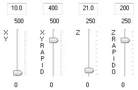

Velocità degli assi

velocità XY: gli slider permettono di modificare la velocità di lavoro degli assi XY e quella in rapido. La velocità di lavoro è usata quando l’utensile è dentro il materiale; la velocità in rapido è usata nei trasferimenti sul piano di lavoro quando l’utensile é sollevato sul materiale. Le velocità sono espresse in millimetri per secondo e possono variare tra il valore minimo e massimo indicati nello slider. La velocità corrente è mostrata nella casella sovrastante lo slider. È possibile utilizzare questa casella per definire la velocità mediante un valore numerico.
NOTA: quando il percorso inviato alla macchina contiene anche le informazioni di velocità, la variazione manuale della velocità XY può risultare inefficace.
velocità Z: gli slider permettono di modificare la velocità di lavoro dell’asse Z e quella in rapido. La velocità di lavoro è usata quando l’utensile deve entrare nel materiale; la velocità in rapido è usata nei trasferimenti quando l’utensile é sollevato sul materiale.